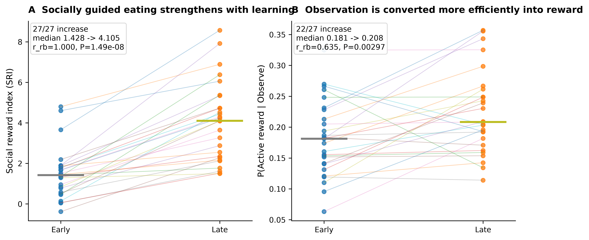
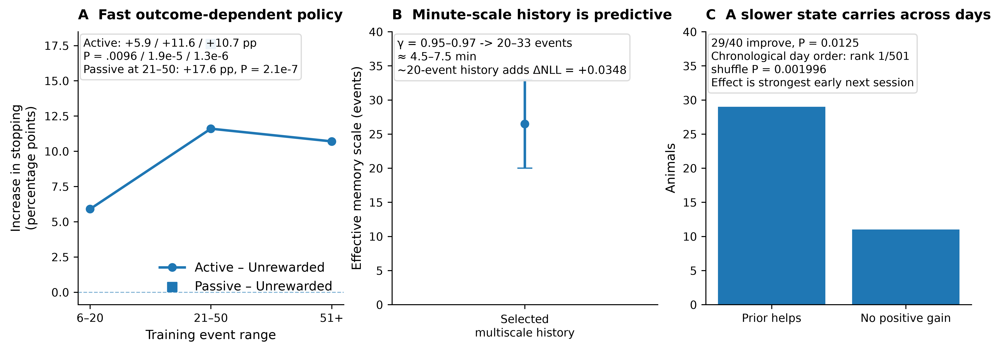

How does social observation become useful behavior?
Social observational eating is an adaptive social-information process. The observer selects when social information is worth sampling, assigns outcome-specific reward credit, and converts informative observed content into its own food-directed action. The Social Learning Model (SLM) links these behavioral operations to VTA dopamine, causal perturbations and closed-loop generation.
This page keeps the major behavioral, computational, neural, causal and generative results together so the full SOE mechanism can be inspected from one place. Main evidence panels use SOE project data.
SOE is learned
Learner SRI rises strongly across training; live social input, visual access and familiarity all matter.
Observation becomes efficient
Learning changes conversion of observation into feeding more than it changes gross observation rate.
Social value is adaptive
Social information is most useful when current self-state leaves room for external evidence to alter policy.
SLM predicts best biologically
Strong behavior plus the broadest coherent neural, causal, recovery and generative evidence.
Learning has multiple timescales
Immediate outcome-conditioned switching, minute-scale memory and a transient cross-day prior coexist.
Observed content drives Feed
Demonstrator feeding during the preceding Observe predicts a short-latency increase in native Feed hazard.
SLM is generatively sufficient
Mouse-derived SLM regenerates trajectory, local strategy and behavioral-state organization in closed loop.
VTA separates computations in time
Early policy → Middle APE → Post reward/update provides the strongest model adjudication.
VB and JAWS dissociate stages
Visual access controls useful information; VTA inhibition selectively disrupts Active social-reward credit.
SOE experience generalizes
Prior SOE training alters later novel-food engagement and observational-fear organization.
SOE strengthens with learning as observation is converted into rewarded action
The behavioral story starts before any model. Learners show a robust increase in socially guided eating, and the same animals become more efficient at converting observation into rewarded action. Social orienting, demonstrator state and behavioral-state occupancy provide the observable structure for this learning.

Swipe the table horizontally for all columns →
Foundational behavioral controls
| Discovery | Result | Interpretation | Status |
|---|---|---|---|
| Acquisition | strict learner SRI ≈1.07→4.58; older n=13 lineage .67±.34→2.82±.44, P<.001 | Social coordination strengthens across training. | learner cohort |
| Live social input | Live demonstrator > simulated demonstrator; simulated SRI ≈.499±.258, n=13, P<.001. | Live-social interaction carries the effective teaching signal. | live-social control |
| Visual access | opaque barrier ≈69% reduction; current VB 3.67→1.08, 23/25 lower | successful social coordination requires visual information | historical + current visual-access evidence |
| Familiarity | unfamiliar partner reduces SRI ≈44%, n=11, P<.05 | social evidence is weighted by partner identity/familiarity | historical familiarity evidence |
| Observation phenotype | Socially directed observation rises with training. | Learning refines selective social observation. | training-dependent observation |
| Conversion | Learner Observe→Feed ≈.431→.641; learning progress β≈+.126. | Successful learners become more efficient at using sampled social information. | learner cohort |
Additional behavioral analyses
Active orienting carries predictive social information
Demonstrator feeding/spout state is highly predictive, but observer-side head direction, facing, angular velocity, social turn and social gaze nearly match the all-feature classifier. Social gaze is the strongest single observer-side feature in the manuscript lineage.
Learning reweights an existing behavioral manifold
Successful active-reward bouts are preceded by distinct states. The global manifold remains broadly stable, while occupancy shifts toward socially informative motifs with training.
Conversion progress tracks learning
Conversion progress correlates with ΔSRI (ρ≈.426, P=.0086), directly linking successful information-to-action transfer to behavioral learning.
Social information has state-dependent decision value
Social evidence is valued selectively. Held-out predictive value changes with learning stage and with the observer’s current behavioral state, revealing when external information can most strongly alter policy.
Median +0.00365 nats/decision; rrb=.725; P=.000268.
Median late−early = −0.00378 nats/decision; rrb=−.619; P=.00194.
Social information is most useful when the observer is farther from its own spout.

Multi-timescale memory recovered before the final SLM
The behavior contains fast rules, minute-scale memory and a transient cross-day state
Independent analyses reveal three separable timescales in the same behavior: immediate outcome-sensitive policy changes, multi-event history over minutes, and a retained cross-day state concentrated near the beginning of a new session.
Active/Passive outcomes increase subsequent stopping relative to Unrewarded. Active−Unrewarded stopping reaches +11.6 pp at events 21–50; Passive reaches +17.6 pp.
Selected γ=.95–.97 corresponds to roughly 4.5–7.5 min and outperforms simple run length or elapsed time.
Chronological day order ranks 1/501 against day shuffles (P=.001996); a retained prior improves 29/40 animals (P=.0125) and fades by ~event 50.


Learning strengthens conversion and reward-credit assignment across timescales
Observe→Active conversion increases in 22/27 learners; r_rb=.635, P=.00297.
Learner-linked APE coupling is significant in VTA; exact P=.0416.
SLM is the best biological predictor of SOE
SLM combines near-ceiling held-animal prediction with a compact set of interpretable coordinates that also organize VTA timing, causal perturbations, model recovery and closed-loop generation. The SLM+choice-persistence head reaches the flexible-history performance ceiling while retaining those coordinates.
A common metric set makes the behavioral comparison explicit
Swipe the evidence matrix horizontally →
This is the key distinction: a black-box history model can shave a few thousandths from behavioral Brier, but SLM is the model family with the strongest coherent evidence across prediction, temporal neural expression, causal perturbation, recovery and generation.

All rows use the same held-animal cohort. The paired effect is computed on animal-level Brier improvement relative to the Current nonlinear state model; positive rrb means lower Brier.
| Model | Brier ↓ | AUC ↑ | rrb vs Current nonlinear ↑ | Paired P |
|---|---|---|---|---|
| Full SLM | 0.170824 | 0.823320 | 0.937 | 1.04e-06 |
| SLM + choice persistence | 0.165411 | 0.834084 | 1.000 | 1.49e-08 |
| Current + Choice-kernel | 0.166401 | 0.832245 | 1.000 | 1.49e-08 |
| TinyRNN h3 | 0.168031 | 0.828605 | 0.968 | 2.09e-07 |
| Current + full-history MLP | 0.164749 | 0.835124 | 1.000 | 1.49e-08 |
| History MLP + formal-all | 0.163722 | 0.837365 | 1.000 | 1.49e-08 |
SLM beats RW, WSLS, Q-active, Q-all, asymmetric-Q, forgetting-Q, choice-kernel and Q+choice-kernel under the restricted baseline contract; rrb=1, P=1.49×10⁻⁸.
SLM+choice persistence recovers 96.9% of Current→full-history-MLP improvement and 92.4% of Current→best-history-model improvement.
Early policy r_rb=.810, P=.0469; Middle APE ρ=.667, P=.0416; Post update r_rb=.867, P=.0195.
The best SLM behavioral head reaches the black-box ceiling without losing mechanism

Actor-Critic, outcome-belief, Q-active, Q-all and adaptive-Q each recover 6/6; only one RW replicate is confused with adaptive-Q.
Feature-Q 20/20, policy 20/20 and state-value actor 19/20 under the 27-learner recursively generated conditional contract.
Observed social content predicts near-term feeding
The newest closure makes feeding a strict future action on a 1-s decision grid. This separates the social-information controller from the observer’s native feeding controller and identifies the content-specific bridge between them.
Observer-only pre-action state; both sessions held out together by animal, n=40.
Feed AUC improves with current social/dyadic state; rrb=.407, P=.0120.
Feed hazard within 3 s after observing demonstrator feeding versus observing no feeding; P=.0377.
Residual acute Feed hazard after frozen self + current-social prediction; P=.0445.

Content-specific conversion analysis
The SLM does more than fit held-out behavior
A mouse-derived Artificial SLM is placed back into an empirical social-foraging world. Its Observe choices and social outcomes are generated in closed loop, allowing memory, belief, value and slow state to evolve recursively.
The fitted SLM regenerates broad learner trajectories without replaying held-out outcomes.
Full SLM gives the strongest current real-versus-generated local strategy kernel and the lowest kernel RMSE among the benchmarked agents.
Autonomous Artificial SLM preserves substantial behavioral-state organization; mean JS=.0390.


Adding SLM coordinates improves Brier, NLL and AUC in every 5-fold × 3-seed × 2-reward run.
P=1.50×10⁻⁹ across animals; RPE ρ=.771 and |ΔActive belief| ρ=.734.
Auto-content beats auto-recency for Feed log loss (P=.0477) and Brier (P=.0346).
VTA dopamine resolves the SLM computation in biological time
Behavior alone allows several high-capacity explanations. The strongest discriminator is temporal: distinct SLM components align with VTA dopamine at distinct phases of social observation and outcome.
Descriptive VTA observations
Demonstrator state is represented in observer VTA
Observer DA is elevated when the demonstrator occupies the food zone and is lower outside it. Demonstrator feeding/spatial state, posture, proximity, velocity and turning all contribute; coupling is stronger in learners.
Active social gaze evokes dopamine
Observer-initiated social gaze evokes VTA DA, exceeds demonstrator-gaze responses, and precedes larger DA during active-reward eating.
Temporal SLM variables adjudicate mechanism
The newer held-block tests refine those descriptive effects into separable policy, APE and post-outcome update computations.
sampling policy
learner-linked action-policy error
reward prediction error
social belief update
credit carried forward

The pre-specified Early sampling-policy signal is positive in 5/6 animals.
APE coupling tracks learning in the middle observation window.
Actor-Critic RPE: P=.0195; belief update: P=.00586.
SOE is organized by coupled social-sampling and feeding policies
The convergent architecture is hierarchical. One policy determines when social information is worth sampling; a native feeding policy converts informative sampled content into food-directed action; reward outcomes update belief/value states that reorganize future sampling.
Visual Block reduces SRI and Observe→Active efficacy while gross social observation remains available.
Current state, fast outcome history, belief/value and slow prior determine when observation has the highest decision value.
Observing demonstrator feeding predicts an acute excess Feed hazard beyond observer-state prediction.
Contingent VTA inhibition selectively reduces Active social-reward belief updating and successful conversion while gross sampling is preserved.

Evidence for the two-policy architecture
Content specificity. Demonstrator feeding at the preceding Observe improves conditional Feed calibration beyond current observer state.
Controller separation. SLM coordinates organize Observe sampling and social credit, while the native Feed policy is dominated by self-state plus a short-lived content-specific eligibility signal.
Acute conversion. The real mouse shows a +7.54 percentage-point Feed-hazard increase within 3 s after observing demonstrator feeding.
Autonomous sampling. Artificial-SLM Observe choices preferentially sample behaviorally useful social content.
Visual information access and dopamine-dependent reward credit are separable operations
Visual Block and JAWS converge on reduced successful Observe→Active conversion through different computational operations: visual-information access versus VTA-dependent reward-credit updating. Gross social observation remains broadly preserved.


| Test | Primary effect | Gross observation | Computational interpretation |
|---|---|---|---|
| Visual Block | SRI ≈3.67→1.08; 23/25 lower | gross observation preserved | visual-information access / efficacy |
| VB Observe→Active | .2830→.2137; P=.00427 | observation-rate change P=.0863 | reduced information-to-action conversion |
| JAWS contingent | SRI 1.880→.786; r_rb=−.927; P=.00586 | gross observation preserved | VTA-dependent reward-credit teaching |
| JAWS Observe→Active | .3202→.1933; P=.003906 | observation fraction Δ=+.044; P=.625 | reduced successful conversion |
| JAWS Active belief | acute r_rb=−1.000, P=.00195; continuous −.927, P=.00586; session −.964, P=.00391 | choice-kernel update r_rb=+.164; P=.695 | Active social-reward belief is the causal coordinate |

Artificial lesion correspondence
Visual Block dopamine
SOE experience reorganizes later use of social information
Two source-rebuilt assays test whether prior social-learning experience transfers beyond the original feeding contingency. They are kept separate because the behavioral domains differ.

Food neophobia / SAFN
Latency: Social-trained mean 45.96 s versus 199.47 s in nonsocial-trained controls; Cliff δ=−.722; exact permutation P=.01948; permutation log-rank P=.03030.
First bout: 61.07 versus 8.81 s; Cliff δ=+.889; P=.00866.
Observational fear
D1 shows stronger shock-locked reactivity, late-cue immobility and sustained shock-focused social monitoring after prior SOE training.
Open the exact analysis authority behind the page
The visual page is a navigation layer. Numeric authority remains in the versioned checkpoint, analysis master, focused mechanistic notes and downloadable CSV tables below.
Latest project-wide analysis authority, statistics, provenance and reproducibility records.
Comprehensive analysis/results authority.
Strict future Feed contract and observed-content bridge.
Generated sampling schedule tested against native Feed conversion.
Generative sufficiency, recurrent convergence and biological grounding.
Visual Block and JAWS computational lesions.
Canonical held-animal behavioral model table.
Audited behavior, Early/Middle/Post DA, JAWS, recovery and generation registry.
35/36 six-family recovery and 59/60 focused recovery authority.
Recovered early phenotype, social gaze, motifs, learning and historical controls.
Frozen Early/Middle/Post model evidence.
Project-wide bounded effects and inferential units.
Brier, AUC, paired rank-biserial effect and paired P on the same held-animal cohort.
Source values for the structured-state comparison figure.
Current page build: 2026-10-04 · mobile-audited scientific working page.